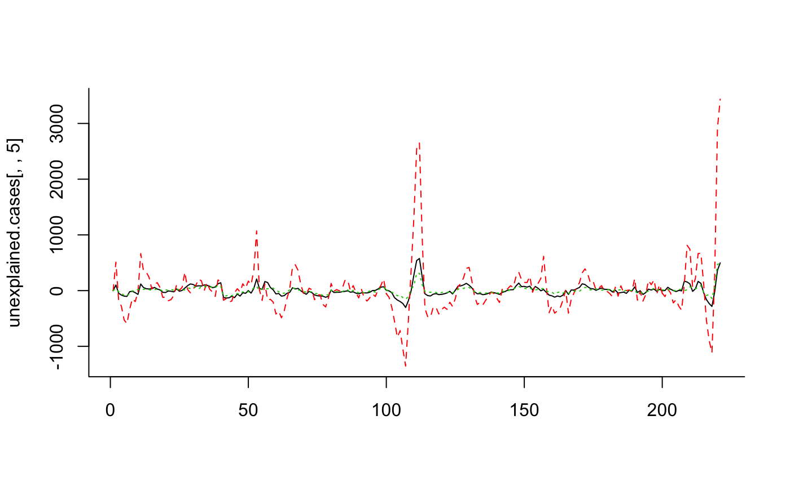

YourData.rmdThe goal for this package is to facilitate the formatting of line list data from syndromic surveillance datasets into time series and then the analysis of these data to detect increases above the seasonal baseline. For US data, there is an option to automatically adjust the data for state-specific flu activity (using data from NREVSS and/or state-specific RSV activity (based on Google search volume). The user can either start with line list data or formatted time series data
We start with a line list of data of all ED visits in a system (1 line per ED visit). We know the admissions data, the age group, and the state. We also have flags for whether the individual had influenza like illness (ILI) or a respiratory code:
head(sim1) #> state adate agegrp ili resp #> 1 CT 2019-01-03 3 0 0 #> 2 CT 2019-01-14 3 0 0 #> 3 CT 2020-04-29 2 0 0 #> 4 CT 2019-06-30 2 0 0 #> 5 CT 2019-09-27 3 0 0 #> 6 CT 2019-12-23 5 0 0
We can aggregate by day or by week:
ts1<-ts_format(line.list=sim1, datevar='adate', agevar='agegrp', statevar='state', syndromes=c('ili','resp'), resolution='week')
We now have the data aggregated by state and week.
head(ts1) #> agegrp adate state sub.statevar ili resp all.visits #> 1 1 2018-12-30 CT CT 0 1 8 #> 2 1 2018-12-30 NY NY 1 5 19 #> 3 1 2019-01-06 CT CT 2 0 9 #> 4 1 2019-01-06 NY NY 1 2 23 #> 5 1 2019-01-13 CT CT 0 2 10 #> 6 1 2019-01-13 NY NY 2 1 24
We will now analyze syndromic surveillance data from emergency departments in New York City
head(combo1) #> # A tibble: 6 x 7 #> ddate borough agec ili resp total.visits state #> <date> <fct> <chr> <dbl> <dbl> <dbl> <chr> #> 1 2016-01-01 Bronx i. u5y 46 121 127 NY #> 2 2016-01-01 Bronx iii. 18-64y 11 112 922 NY #> 3 2016-01-01 Bronx ii. 5-17y 15 35 142 NY #> 4 2016-01-01 Bronx iv. 65+y 1 39 116 NY #> 5 2016-01-01 Bronx v. All ages 73 307 1598 NY #> 6 2016-01-01 Citywide i. u5y 223 485 391 NY
excess_cases1 <- excessCases(ds = combo1, sub.statevar = "borough", datevar = "ddate", agevar = "agec", statevar = "state", denom.var = "total.visits", use.syndromes = c("ili", "resp"), adj.flu ='auto', extrapolation.date = "2020-03-01", time.res='week')
unexplained.cases <- excessExtract(ds = excess_cases1, syndrome = "ili", extract.quantity = "unexplained.cases")
matplot(unexplained.cases[,,5], type='l', bty='l')
